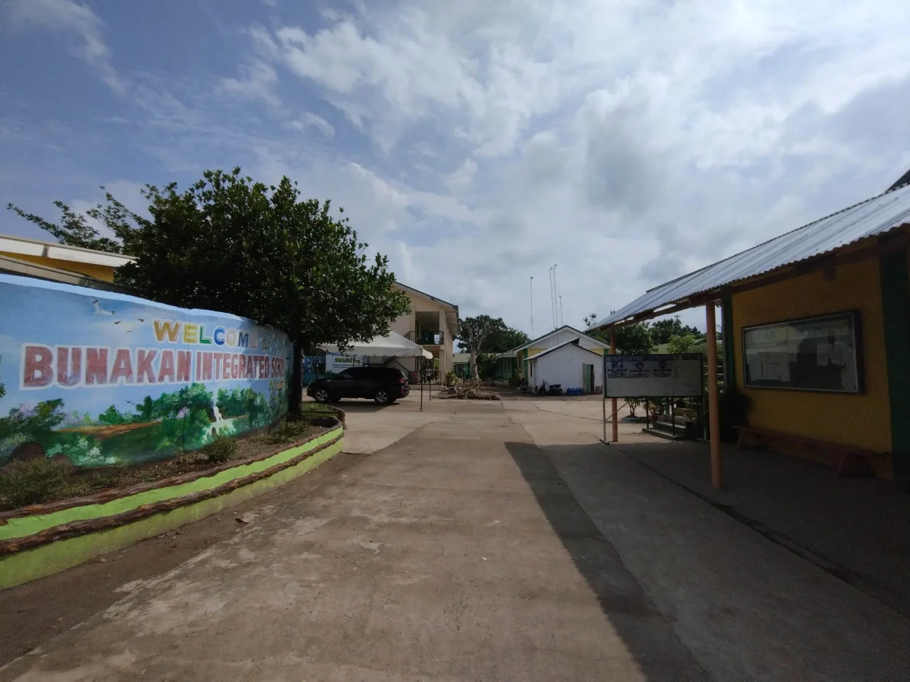
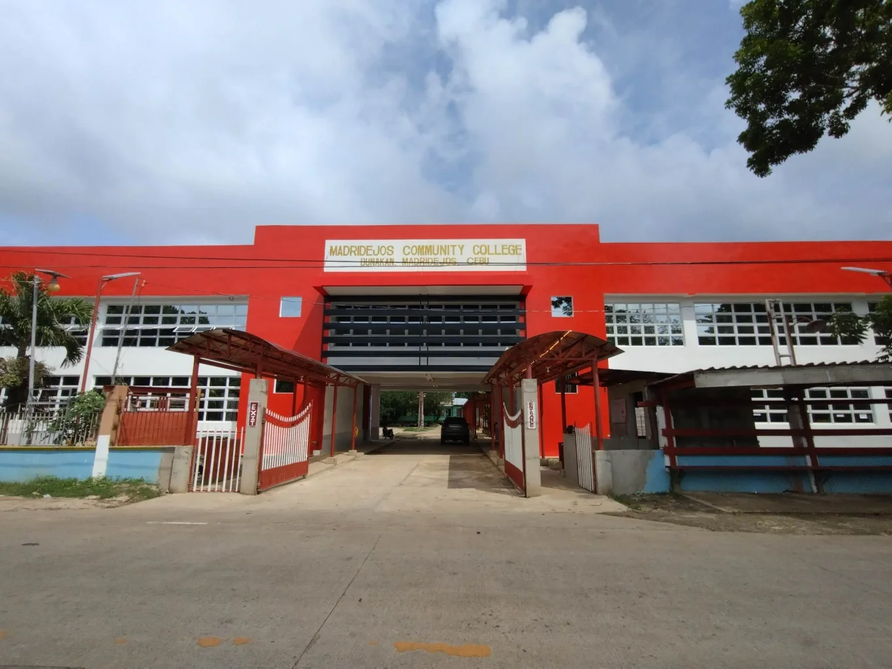

Bunakan Elementary School
Bunakan Elementary School

More Details
Bunakan Elementary School
| Year | Number of Students Enrolled (Grade 1-6) |
|---|---|
| 2020 | 420 |
| 2021 | 412 |
| 2022 | 425 |
| 2023 | 434 |
| 2024 | 442 |
Bunakan Elementary School History
Bunakan Elementary School is a public school located in Barangay Bunakan, established to provide foundational education to the children of the local farming and fishing communities. Over the years, the school has played a vital role in uplifting the literacy rate and promoting values-based education. With a dedicated team of teachers and support from the barangay and parents, the school has nurtured generations of learners. During the COVID-19 pandemic in 2020 and 2021, the school shifted to distance and modular learning, ensuring that education continued despite difficult circumstances. In the following years, Bunakan Elementary School successfully resumed face-to-face classes, seeing a steady rise in student enrollment and active participation in academic and extracurricular programs.
MADRIDEJOS COMMUNITY COLLEGE
MADRIDEJOS COMMUNITY COLLEGE

More Details
MADRIDEJOS COMMUNITY COLLEGE
| Year | BSED | BEED | BSIT | BSBA | Total Enrolled |
|---|---|---|---|---|---|
| 2020 | 210 | 190 | 350 | 280 | 1,030 |
| 2021 | 220 | 200 | 380 | 300 | 1,100 |
| 2022 | 240 | 210 | 450 | 350 | 1,250 |
| 2023 | 250 | 230 | 580 | 430 | 1,490 |
| 2024 | 260 | 240 | 720 | 600 | 1,820 |
Madridejos Community College (MCC) - History
Madridejos Community College (MCC), located in Madridejos, Cebu, was established with the goal of providing affordable and accessible higher education to students in the northern part of Cebu. Founded by the local government to uplift the educational standards of the municipality, MCC has offered various degree and diploma programs in education, technology, business, and general studies. Throughout the years, MCC has played a key role in empowering local youth by offering tertiary education without the need to leave their hometown. The college adapted quickly to the challenges brought by the COVID-19 pandemic by implementing online and modular classes to ensure that learning continued safely. As restrictions eased, the institution shifted back to face-to-face classes with enhanced support services and improved facilities. With a growing reputation for academic quality and community involvement, MCC continues to increase its enrollment year after year.